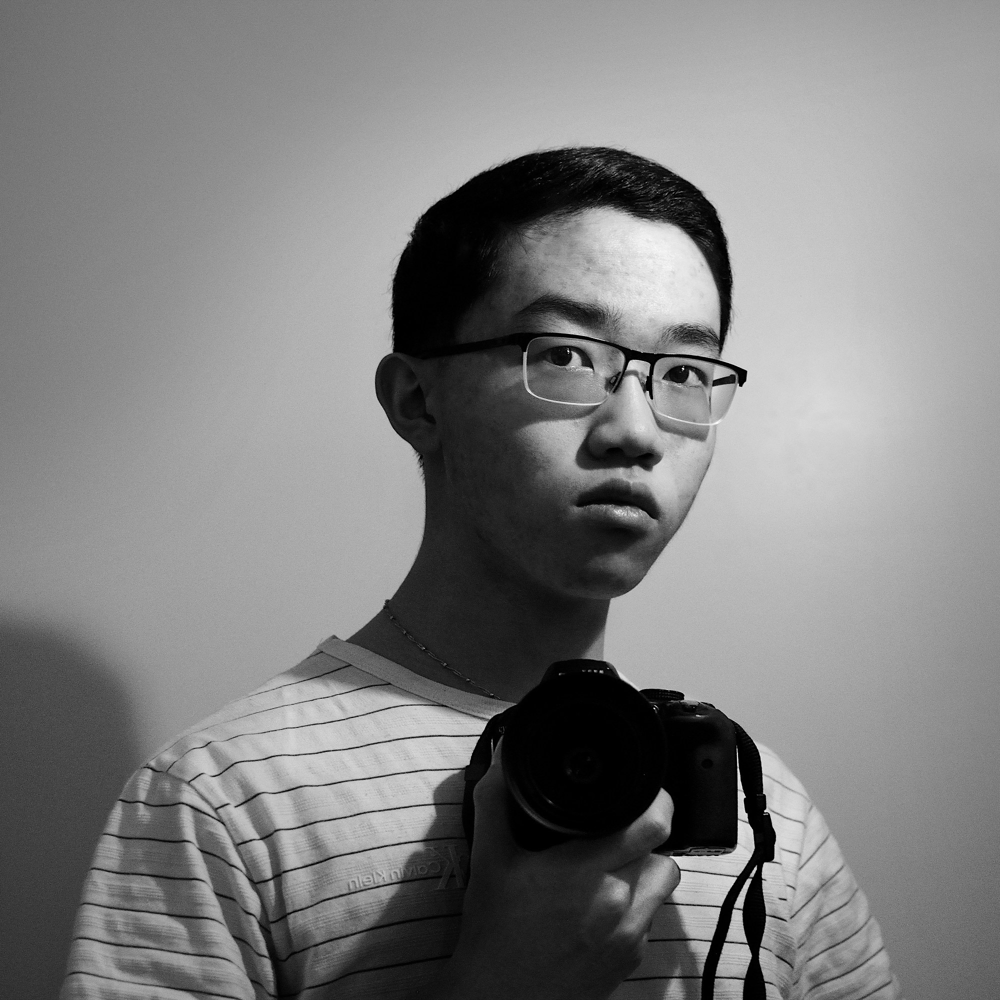

Self portrait of me looking somewhat disinterested. I had to use a self timer and blindly guess the framing because camera that was used to
take this photo is actually the one that I am holding. The whole image is also reversed because this was shot through a mirror.
Nikon D3300 | Nikkor 35/1.8G DX
Hi, this is Trevor Li here. Welcome to my photography website where I'll be sharing photos that I've taken in the past as well as photos from my upcoming photo walks. I plan on adding a new article weekly if I can, depending on whether or not I have enough free time to walk around the city.
How long have you been doing photography?
Since the spring of 2015 when I first bought my Nikon D3300 DSLR. It's still my main digital camera and it has accumulated well more than 34,000
shutter actuations.
Do you shoot film or digital?
I shoot both; 90% digital, 10% film. However, I really do wish that it was closer to a 50/50 split but film and developing costs are expensive.
($20 CAD for a 35mm roll of Fujifilm Provia?!)
Why do you shoot film?
I view it as just another art medium, just like how someone can choose to paint in watercolours or oil paints. I personally really enjoy the
fact that shooting and developing film is a purely analog process. It's a completely physical medium that relies solely on chemical reactions.
I also love the feeling of loading a fresh roll of film and winding the advance lever on a film camera. I think a major part of shooting film
isn't just getting back the results but also the feeling of using a vintage, mechanical film camera. All the knobs, levers, and buttons makes
for a unique experience. It also really gets you to stop and think before you take the shot.
What's your favourite film?
At the moment, it would be Fujifilm Superia X-TRA 400. It's cheap but can give decent results. It can be very finicky when you underexpose it
(you'll get ugly green shadows that can't be fixed in post) but if you rate it at ISO ISO 160 (overexposing by 1 1/3 stops), it becomes a
whole other film. The shadows will improve greatly and the overall greenish tint that Superia 400 can have will go away. As a bonus, the film
grain will get a lot tighter and less distracting the more you overexpose it. (However, how much film grain you want depends on personal taste.)
I've personally shot Superia 400 up to 5 stops over and it holds up amazingly well. I actually could not tell that a photo was overexposed by 5
stops until I looked at the negative and realized just how dense it was. Fuji Superia 400 also seems to give cooler (less warm) colours when
compared to a film like Kodak Gold or Portra, which I enjoy.
© Trevor Li 2019, all rights reserved. All images taken by Trevor Li unless noted.